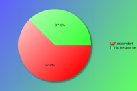
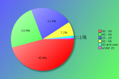
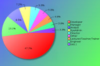
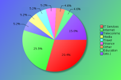
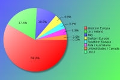

YAPC::Europe 2010 - Survey Results
The following survey results are a simple presentation of the raw data.
No attempt has been made to analyse the data and compare with previous
years. See forthcoming PDFs for more in depth analysis.
Click on pie charts to view larger image version.
Demographics (required)
These questions will help us understand who our attendees are.
Attendees:

| Count | Description |
|---|
| 153 | Responded |
| 92 | No Response |
| 245 | Total |
| 62 | Response Percentage |
Age Band:

| Count | Description |
|---|
| 1 | under 20 |
| 33 | 20 - 29 |
| 70 | 30 - 39 |
| 36 | 40 - 49 |
| 11 | 50 - 59 |
| 2 | 60 and over |
Job Type:

| Count | Description |
|---|
| 9 | CEO/Company Director/Senior Manager |
| 0 | Non-Technical Manager |
| 20 | Technical Manager |
| 13 | Technical Architect/Analyst |
| 73 | Developer |
| 6 | Engineer |
| 11 | SysAdmin |
| 4 | Student |
| 7 | Lecturer/Teacher/Trainer |
| 0 | Human Resources |
| 1 | Researcher |
| 0 | Unemployed |
| 9 | Other |
If your position covers many roles, please base this on your most senior responsibility. Also base this on the role you perform, rather than your job title. For example, a 'QA Developer' would be a 'Developer' role, and 'Information Manager' would a Manager role (Technical or Non-Technical depending upon your responsibilites)
If 'Other' please enter your professional job role or title:
- Bureaucrat
- Business Analyst / Information Management
- Evangelist
- Lawyer
- lots of diffeent stuff
- Network admin
- Software Localizer
- System engineer
Industry:

| Count | Description |
|---|
| 2 | Automotive |
| 7 | Education |
| 3 | Engineering |
| 8 | Finance |
| 3 | Government |
| 45 | IT Services |
| 39 | Internet/Web |
| 0 | Legal |
| 0 | Logistics |
| 8 | Media/Entertainment |
| 1 | Medical/Healthcare |
| 4 | Property |
| 6 | Research |
| 4 | Retail |
| 8 | Telecommunications |
| 8 | Travel |
| 0 | Unemployed |
| 7 | Other |
If you or your company undertake work within mulitple industry sectors, please select the primary one you are currently working within.
If 'Other' please enter your industry sector:
- Home automation
- Hospitality
- Marine Insurance Broking
- Network management
- Plant Bioinformatics (Agrotech?)
- Tourism
Region:

| Count | Description |
|---|
| 16 | Italy |
| 27 | UK / Ireland |
| 89 | Western Europa |
| 7 | Eastern Europa |
| 5 | Southern Europa |
| 4 | United States / Canada |
| 5 | Asia / Australaisa |
| 0 | South America |
| 0 | Africa |
Please note this is the region you were a resident in, prior to attending the conference.
The Perl Community, YAPCs & Workshops
These questions are designed to help us understand our attendees level of involvement in the Perl community.
How do you rate your Perl knowledge?
| Count | Description |
|---|
| 9 | Beginner |
| 46 | Intermediate |
| 98 | Advanced |
How many previous YAPCs have you attended?
| Count | Description |
|---|
| 41 | This was my first YAPC |
| Attended YAPCs | 1 | 2 | 3 | 4 | 5 | 6 | 7 | 8 | 9 | 10 | 11 | 12 | total |
|---|
| YAPC::Europe | 23 | 25 | 14 | 14 | 8 | 9 | 6 | 1 | 3 | 6 | - | - | 403 |
| YAPC::NA | 3 | 1 | 1 | 2 | 2 | - | 1 | - | 1 | - | - | 2 | 66 |
| YAPC::Asia | 2 | 2 | - | 1 | - | - | - | - | - | - | - | - | 10 |
| YAPC::Australia / OSDC::Australia | 2 | - | - | - | - | - | - | - | - | - | - | - | 2 |
| YAPC::Israel / OSDC::Israel | 1 | - | - | - | 1 | - | - | - | - | - | - | - | 6 |
| YAPC::Russia | 2 | - | - | - | - | - | - | - | - | - | - | - | 2 |
| YAPC::SA / YAPC::Brazil | - | 1 | 1 | - | - | - | - | - | - | - | - | - | 5 |
How many Perl Workshops have you attended?
| Count | Description |
|---|
| 40 | Never attended one |
| Attended Workshops | 1 | 2 | 3 | 4 | 5 | 6 | 7 | 8 | 9 | 10 | 11 | total |
|---|
| Austrian Perl Workshop | 5 | 2 | - | 2 | - | - | - | - | - | - | - | 17 |
| Belgian Perl Workshop | 7 | 4 | 3 | - | - | - | - | - | - | - | - | 24 |
| French Perl Workshop | 3 | 1 | 1 | 3 | - | 1 | 1 | - | - | - | - | 33 |
| German Perl Workshop | 5 | 5 | 4 | 1 | 2 | 4 | 4 | - | - | - | 1 | 104 |
| Italian Perl Workshop | 9 | 4 | 2 | 3 | 2 | - | - | - | - | - | - | 45 |
| London Perl Workshop | 13 | 8 | 4 | 1 | 5 | 2 | - | - | - | - | - | 82 |
| Netherlands Perl Workshop | 2 | 2 | 1 | 2 | 2 | 1 | 1 | - | - | - | - | 40 |
| Nordic Perl Workshop | 13 | 6 | 1 | 3 | 1 | 2 | - | - | - | - | - | 57 |
| Portuguese Perl Workshop | 4 | 4 | - | - | - | - | - | - | - | - | - | 12 |
| Ukrainian Perl Workshop | - | 1 | - | - | - | - | - | - | - | - | - | 2 |
| any American Perl Workshops | 1 | 1 | - | 3 | - | - | - | - | - | - | - | 15 |
| any Russian Perl Workshops | - | 1 | - | - | - | - | - | - | - | - | - | 2 |
| Other Perl Workshops | 5 | 5 | - | - | - | - | - | - | - | - | - | 15 |
Do you plan to attend a future YAPC/Workshop?
| Count | Description |
|---|
| 135 | Yes |
| 16 | Maybe |
| 1 | Don't Know |
| 1 | No |
If no, could you tell us why?
Particularly if this is your first YAPC, we would like to understand why you would not be able or interested in attending another event like it.
- Getting more interested in Ruby and Python
Are you a member of a local Perl Mongers user group?
| Count | Description |
|---|
| 103 | Yes |
| 50 | No |
If not, do you plan to find one or start one?
| Count | Description |
|---|
| 13 | Yes |
| 22 | Maybe |
| 7 | Don't Know |
| 15 | No |
What other areas of the Perl Community do you contribute to?
| Count | Description |
|---|
| 85 | I'm a CPAN Author |
| 21 | I'm a CPAN Tester |
| 28 | I'm a Perl project developer (eg Rakudo, Catalyst, TAP, Padre, etc) |
| 50 | I have a technical blog (e.g. on blogs.perl, use.perl or a personal blog) |
| 50 | I use or contribute to PerlMonks or other Perl forums |
| 81 | I use IRC (e.g. #perl, #yapc, or #london.pm) |
| 54 | I contribute to Perl mailing lists (e.g. P5P, Perl QA, etc) |
| 17 | other ... |
If 'Other' please enter your area of contribution
- Commit to Perl5 source
- core developer
- core doc patches, Perl 6 development
- expo marketing
- I help organizing perl at perl and non perl events
- I plan to run a conference
- I teach a Perl course for free
- i teach friends
- I try to spread the word of Perl in India
- none
- One of the main organizers of our Perl-Mongers meetings
- Perl Organisations
- Perl::Staff member
- Stackoverflow
- stackoverflow,com
- use Perl on VMS
- usenet! CLPM
- workshops 4 free, @perloneliner twitter
- YEF/TPF/APPP member
YAPC::Europe 2010
Regarding YAPC::Europe 2010 in Pisa, Italy specifically, please answer the following as best you can.
When did you decide to come to this conference?
| Count | Description |
|---|
| 78 | I'm now a regular YAPC::Europe attendee |
| 24 | After YAPC::Europe 2009 in Lisbon |
| 0 | After joining the Facebook event group |
| 7 | I was nominated to attend by manager/colleague |
| 20 | I was recommended to attend by friend/colleague |
| 1 | After reading an ad in a magazine |
| 2 | After seeing a link or advert on a Perl specific site |
| 0 | After seeing a link or advert on a non-Perl site |
| 3 | After reading an email sent to a mailing list I was in |
| 1 | After seeing other promotions online/in the press |
| 14 | other ... |
If 'Other' please let us know when
- after attending London Perl Workshop
- After attending the Perl workshops
- After being privately informed about the event by the organizers.
- after convincing my manager to let me go
- after finally doing it
- after IPW 2009 in Pisa
- after reading the workshop program
- After the IPWs
- After winning the quiz I read about on mst's twitter
- At the perl mongers meeting
- I helped organizing the event
- I was invited by the organizers
- It was a convenient location
- Send-a-newbie
- To socialize with fellow core hackers
Were you a speaker?
| Count | Description |
|---|
| 76 | No |
| 23 | No, but I have spoken before at similar conferences |
| 45 | Yes, and I have spoken before at similar conferences |
| 8 | Yes, and it was my first time as a speaker |
Note that "similar conferences" includes other YAPCs, as well as Linux, Open Source or large technical events such as workshops.
If you were a speaker, would you have been able to attend if you hadn't been speaking?
| Count | Description |
|---|
| 57 | Yes |
| 8 | No |
If you weren't a speaker, would you consider speaking at a future conference?
| Count | Description |
|---|
| 54 | Yes |
| 12 | No |
| 39 | Ask me later |
What was your motivation for coming?
| Count | Description |
|---|
| 80 | the list of speakers |
| 74 | the quality of the talks scheduled |
| 40 | to be a speaker |
| 100 | to meet with Perl/project co-contributors |
| 122 | to socialise with Perl geeks |
| 29 | to meet Larry Wall |
| 19 | to meet Damian Conway |
| 72 | to visit Pisa or Italy |
| 12 | other ... |
If 'Other' please let us know your motivation for coming
- getting away from work for a week, attending courses
- meet some italian mongers I knew from before via irc/mail but never met in person
- Perl 6 Hackathon
- Recruiting people
- Recruiting Perl programmers
- the training courses
- to catch up on the latest Perl developments
- to get increased motivation for working with, and contributing to, the perl community
- to hire
- to learn more about Perl and related
- to meet all others
- to recruit
What aspects of the conference do you feel gave value for money?
| Count | Description |
|---|
| 142 | the talks / speakers |
| 23 | the conference bag |
| 57 | the tshirt |
| 14 | the job fair |
| 93 | the conference dinner |
| 86 | the conference venue |
| 60 | the city of Pisa |
| 49 | the hallway track |
| 103 | the attendees |
| 9 | other ... |
If 'Other' please enter your suggestions
- coffee breaks and lunch
- hospitality of the orgas, Florence tour
- I was the remote speaker ;-)
- it was really well organized
- O'Reilly stand with good prices
- Orzo Bruno
- the auction
- the lightning talks
- The stellar lunch and coffee breaks.
Did you have holiday planned around your conference attendance?
| Count | Description |
|---|
| 62 | I came just for the conference |
| 11 | several days before only |
| 15 | 1 day before only |
| 30 | several days before and after |
| 16 | 1 day after only |
| 18 | several days after only |
Were there any talks you wanted to see, but missed due to clashes in the schedule?
| Count | Description |
|---|
| 81 | Yes |
| 60 | No |
If 'Yes', which talks did you miss?
| Count | Description |
|---|
| 10 | Dave Cross - The Perl Community |
| 9 | José Castro - 100 candidates |
| 9 | Scott Chacon - Git 101 Tutorial |
| 8 | Abigail - When Scrum isn't agile enough |
| 8 | Dave Cross - Things I Learned From Having Users |
| 8 | Florian Ragwitz - Dist::Zilla - Maximum Overkill for CPAN Distributions |
| 8 | Jonathan Worthington - Perl 6 Signatures: The Full Story |
| 8 | Léon Brocard - What's new in Perl 5.12? |
| 8 | Nelson Ferraz - Perl in the Data Warehouse |
| 8 | Sam Vilain - The Joy of MooseX:: |
| 8 | Tim Bunce - Understanding and Optimizing your Code with Devel::NYTProf |
| 7 | Carl Mäsak - Perl 6: Prince of Parsea |
| 7 | Clinton Gormley - ElasticSearch, you know, for search |
| 7 | Patrick Michaud - Not Quite Perl (NQP) - A lightweight Perl 6 |
| 7 | Patrick Michaud - Rakudo Star - A usable Perl 6 release |
| 7 | Tomas Doran - Large platform architecture in (mostly) perl - an illustrated tour |
| 6 | Allison Randal - Migration strategies |
| 6 | Martin Berends - Perl 6 Database Interfacing |
| 6 | Sam Vilain - A brief history of the Pumpkin |
| 6 | Zefram - syntax plugins for 5.12 |
| 5 | Aaron Crane - Perl on Speed: Multicore Programming for Mortals |
| 5 | Francesco Rivetti - Parse::RecDescent by examples |
| 5 | Giuseppe Maxia - Shooting from the hip : Perl at the command line for DBAs |
| 5 | John Scoles - Intro to XS |
| 5 | jonasbn - Workflow |
| 5 | Max Maischein - Webautomation with WWW::Mechanize::Firefox |
| 5 | Sawyer X - When Perl Met Android |
| 4 | Alberto Simões - Textual Document Rewriting or, when substitutions are not enough |
| 4 | Dave Rolsky - Fey and Fey::ORM |
| 4 | Gabor Szabo - Padre, the Perl IDE: Building an open source team, getting the project to users against the odds |
| 4 | Jon Allen - Introduction to CouchDB |
| 4 | Lech Baczyński - WTF mistakes - how to avoid less known Perl pitfalls and save lots of debugging time |
| 4 | Matt S Trout - The Troll, the God and the Mountain |
| 4 | Michel Rodriguez - 10 XML::Twig Methods you might not know about |
| 4 | Reini Urban - The Perl Compiler |
| 4 | Steffen Mueller - XS++ - Bonding Perl and C++ with minimal pain |
| 4 | Uwe Voelker - Graphic visualization - there is a life after GD and GD::Graph |
| 3 | Abigail - Booking.com, a Perl success story |
| 3 | Andrew Shitov - Using text in search requests with examples in Perl 6 |
| 3 | BinGOs - CPANPLUS - Beyond the shell |
| 3 | Chisel Wright - Going postal |
| 3 | Roman Baumer - Enterprise Directories, Data synchronisation and Perl |
| 3 | Smylers - Mentoring Perl Beginners: Tales from Coaching Colleagues |
| 3 | Vincent Pit - The making of an object model for Tikz |
| 2 | Adam Bartosik - From waterfall to agile, changing "should be" to "is working" |
| 2 | Barbie - CPAN Testers 2.0 : I love it when a plan comes together |
| 2 | Bernd Ulmann - 5 - a stack based array language implemented in Perl |
| 2 | Carl Mäsak - Perl 6 appetizers |
| 2 | Herbert Breunung - What is Kephra about? |
| 2 | Herbert Breunung - What we can learn from Rebol? |
| 2 | Jon Allen - Perl in the Real World |
| 2 | Karl Moens - Perl \& \LaTeX |
| 2 | Leo Lapworth - DBIx::Class introduction and refresher |
| 2 | Matt S Trout - Ironman Forfeit Talk |
| 2 | Moritz Lenz - Perl 6 and The Real World |
| 2 | Paul Johnson - How to create high quality software |
| 2 | Salve J. Nilsen - Kaizendo: Individually customizable textbooks |
| 2 | Steffen Schwigon - Searching Perl Workloads |
| 1 | Anton Berezin - An optimization primer: DBIx::Perlish |
| 1 | Antonio Barone - Venda, the world's largest on-demand eCommerce platform |
| 1 | Emanuele Zeppieri (emazep) - SQL::QueryByForm: a new easy form-based query language |
| 1 | Jose Luis Martinez - Writing Nagios plugins with Perl help |
| 1 | Peter Makholm - Does your code work correctly? |
| 1 | Sébastien Aperghis-Tramoni - [LT] Enterprise Perl.. the revenge |
| 1 | Steffen Schwigon - Perl::Formance - Perl performance benchmarking |
| 1 | Tim Bunce - DBDI: A Foundation For Database Access In Perl 6 |
Additional comments:
- A lot
- [several] ... but thanks to the videos, I hope being able to watch most of these, as soon as I have the time.
- dunno anymore. but at Linux Tag in Germany they orgaize the talks in tracks and I think that's a great idea. e.g. testing, perl6, perl internals etc
- I remember there were clashes, but forgot which. Overall, the schedule organization was well done!
- I'd have seen them all if possible.
- Lots... But I understand that not all can be seen
- mainly perl 6 talks which would have been interesting but not needed for my work
- most of Perl6 because I felt Perl6 was taking too long a time from attending a talk to being actually able to use perl6 for more than just fun - and then either being sad because i cannot use the perl6 features in a perl5 production environment or just forgetting about them until perl6's prime time is there.
- It would be really easy if you would put up the talks first, then let people choose what they want to see and then make the schedule ! let us write optimize::schedule and have a killer app !
- No one in particular. Sometimes it was hard finding even one talk that was appealing, other times there were several at a time. Coming to the conference as a team of colleagues, we were able to take simple notes for each other.
- Several
- Talks video footage will sort this out.
- The DBA talk by datacharmer, but I've seen the slides are online
- The extended Git sessions, and others. I'll try to catch up on the videos later.
- Too many to remember.
There are always conflicts in the schedule, as it's difficult to know what everyone would like to see. However, if you could list a few talks that you missed, it would give speakers an idea whether it would be worth updating their talks for furture events.
Were there any speakers not present, who you would like to have seen at the conference?
| Count | Description |
|---|
| 90 | Yes |
| 44 | No |
If 'Yes', which speakers?
| Count | Description |
|---|
| 46 | Damien Conway |
| 12 | Paul Fenwick |
| 11 | Mark Jason Dominus |
| 8 | Curtis Poe (Ovid) |
| 5 | Marty Pauley |
| 5 | Tatsuhiko Miyagawa |
| 4 | Adam Kennedy |
| 4 | Philippe Bruhat (BooK) |
| 4 | Randal Schwartz |
| 4 | Thomas Klausner (domm) |
| 3 | chromatic |
| 3 | Jacinta Richardson |
| 3 | Jesse Vincent |
| 2 | Audrey Tang |
| 2 | David Wheeler |
| 2 | Merijn Brand (Tux) |
| 2 | Ricardo Signes |
| 1 | Anatoly Sharifulin |
| 1 | Andrew Whitworth (whiteknight) |
| 1 | David Golden |
| 1 | Jarkko Hietaniemi |
| 1 | Jos Boumans |
| 1 | Josh ben Jore |
| 1 | Matthew Wilson (diakopter) |
| 1 | Michael Schwern |
| 1 | NotFound |
| 1 | Piers Cawley |
| 1 | Rafael Garcia-Suarez |
| 1 | Simon Cozens |
| 1 | Stephen Weeks (Tene) |
| 1 | Steven Little |
| 1 | Tom Christiansen |
| 1 | Yusuke Kawasaki |
| 1 | Yuval Kogman |
Additional comments:
- Damian Conway. But of course I have full understanding of the circumstances as well. But you did ask. [Many similar sentiments were echoed by others - Barbie]
- I don't know much about prominent Perl speakers/developers/contributors.
- Myself ;-)
- there are (too) man interesting speakers in our community
What kinds of talks would you prefer at future conferences?
| Count | Description |
|---|
| 11 | More beginner level talks |
| 21 | More intermediate level talks |
| 46 | More advanced level talks |
| 57 | It's about right |
| 16 | No preference |
Are there any topics you would specifically like to see featured?
- - How to make things happen with Rakudo Perl 6.
- Cook-booking lessons about Perl 6.
- - Packaging & deployment of big apps (Shipwright, et al.)
- Upgrading strategies
- Coordination with GNU/Linux distros
- Perl on the cloud
- - Testing and test suits
- High performance real world examples
- A permanent beginner track with the same low level talks given every year. New attendees will benefit from the simple talks and we can develop new speakers with existing content.
- Anything that makes a great talk :)
- Asynchronous coding (POE, AnyEvent, Reflex) and more network stuff
- Code generation - writing Perl which writes Perl.
I would love to see the whole tracks dedicated to most known modules of Modern Perl, especially Moose. It's impossible to cover all the issues even during 50 minutes talk, so maybe a bunch of 20 minutes "atomic" talks would do.
- enterprise perl
- GUI
- How to go about learning enough C to get into hacking on perl
or An intro to hacking on perl through an example bug fix
What the CPAN needs - any obvious gaps in the CPAN that developers could make modules for
Test::Aggregate, Test::Class, other advanced testing techniques
- I think the balance was reasonable. A beginners track might be useful.
- I would like to see better speakers !
So the idea of making a speaker's workshop before was a good one.
- I would like to see more on web devel & deploy.
- I'd like to see more humorous lightning talks - Smylers's talk and the talk entitled "chmod -x chmod" were great.
- Javascript and Perl
Web design and Perl
WebGUI, Bricolage more details about the CMS-es and other applications in Perl
- Keep up the XS/internals talks. I'd like to see some more about deployment of Perl apps and more talks about specific applications written in Perl.
- language design theory
- Migrating from older perl versions (5.8) to newer and how to keep doing that: a migration/update strategy with good reasons which could be presented to "business types".
I also enjoyed the non-technical lightning talk about "clarifying tech writing": there should be more like that!
- Modern perl in general, Deployment options also for OS.X + win32, Introduction to Moose, Introduction/Comparison to established templating systems (Mason, TT), introduction to Catalyst
- mod_perl REST, messaging, queues
- mod_perl, web stuff
- Moose core, Perl core, XS for beginners, GUIs(!)
- Moose, Catalyst and Perl API.
- Moose, Catalyst, Dancer and other web application framework.
- Moose, Catalyst, Plack
- More Perl for web developers maybe... Plack, non-Catalyst web frameworks
- more tutorial on perl 6 (beginner level)
- Network, Web
- NLP / Math related topics
- Performance
- Perl 6
- perl core
- Perl6
Modern Perl
- Perl6 and Parrot.
- perlguts, Perl 6
- Presentation of new intresting modules and common usage of perl technologies in real world.
- Real world Perl success stories.
- Some talks that reflect the subtitle of the conference (Renaissance).
- speed optimization
parallelization
- Stories from "real life" in companies
- System Administration
- testing and QA
- this year was about right for the talks I saw, but I think more beginner talks would be useful, as we had a lot of new people who have never seen of the basic talks, that speakers later drop in favour of more advance talks.
- Tools done in Perl
- We desperately need a whole beginner's track at YAPC. Only the seasoned developers come to YAPCs; we're missing a great opportunity to draft new talent.
- Web development
More talks on the Moose ecosystem
- Win32 modules
POSIX
How do you rate the conference?
How would you rate your overall satisfaction of the following areas of the conference?
| Choices | 1 | 2 | 3 | 4 | 5 |
|---|
| Newsletters/Updates | 80 | 53 | 8 | 4 | - |
|---|
| Web site | 93 | 51 | 7 | - | - |
|---|
| Registration process | 110 | 37 | 3 | - | - |
|---|
| Directions/Maps | 80 | 64 | 5 | - | - |
|---|
| Content of the talks | 36 | 99 | 14 | 2 | - |
|---|
| Schedule efficiency | 66 | 72 | 11 | 2 | - |
|---|
| BOFs | 9 | 21 | 13 | 6 | - |
|---|
| Social events | 83 | 52 | 10 | - | - |
|---|
| Parking | 24 | 5 | - | 1 | - |
|---|
| Facilities | 67 | 73 | 5 | 1 | - |
|---|
| Food service | 79 | 57 | 14 | 2 | - |
|---|
| Accommodation | 64 | 49 | 14 | 4 | - |
|---|
| Staff | 121 | 26 | 3 | - | - |
|---|
| Overall experience | 109 | 40 | 3 | - | - |
|---|
| Value for price | 120 | 22 | 2 | 1 | - |
|---|
Key:
1 = Very Satisfied
2 = Somewhat satisfied
3 = Somewhat un-satisfied
4 = Very un-satisfied
5 = N/A
The Conference Fee
In order to help future organisers gauge an appropriate conference fee, how much would you (or your company) have paid for a conference ticket? Feel free to provide an answer for all rates, where corporate rate would be paid for by your company (including a Master Class place), standard rate would be the regular price paid by attendees in paid employment, and lastly the concession rate for anyone who holds proof that they are in fulltime education or are unemployed.
Corporate Rate:
| Count | Fee |
|---|
| 3 | € 100 |
| 1 | € 1200 |
| 6 | € 1000 |
| 1 | € 750 |
| 10 | € 500 |
| 2 | € 400 |
| 1 | € 350 |
| 1 | € 300 to 500 |
| 6 | € 300 |
| 14 | € 250 |
| 19 | € 200 |
| 4 | € 150 |
| 1 | € 120 |
| 1 | € 80 |
Standard Rate:
| Count | Fee |
|---|
| 58 | € 100 |
| 1 | € 400 |
| 4 | € 200 |
| 13 | € 150 |
| 1 | € 130 |
| 4 | € 120 |
| 1 | € 99 |
| 1 | € 80 |
| 1 | € 75 |
| 2 | € 70 |
| 2 | € 60 |
| 2 | € 50 |
Concession Rate:
| Count | Fee |
|---|
| 1 | € 10 |
| 2 | € 150 |
| 1 | € 100 |
| 1 | € 80 |
| 4 | € 75 |
| 1 | € 70 |
| 4 | € 60 |
| 31 | € 50 |
| 1 | € 45 |
| 6 | € 40 |
| 6 | € 30 |
| 3 | € 25 |
| 3 | € 20 |
How did you pay for the conference fee?
| Count | Description |
|---|
| 41 | N/A - I was a speaker |
| 6 | N/A - I was a sponsor |
| 45 | My company paid |
| 52 | I paid out of my own pocket |
| 0 | I wasn't able to attend |

{kind=link}
{kind=link}
{kind=link}
{kind=link}
{kind=link}